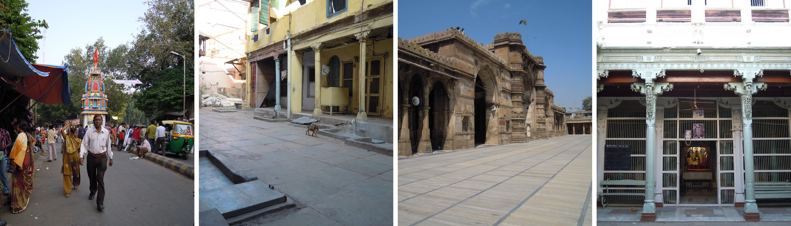

i.
a plural place
The walled city grew over generations without a plan: pols, havelis, gates, temples and mosques, formal and informal markets, narrow lanes and loud streets. Tourists, students and people from the new city each read it differently. Field visits, readings and a conversation with the architect Yatin Pandya framed the project: work with the experience of the place, not only its architecture.
